In this article, we're going to discuss how you can install Virtual Box, a Virtual Machine that will allow your computer to run a different operating system on your computer without affecting your main computer. We'll also cover how to use the same clipboard (i.e., Ctrl+C and Ctrl+V) both on your computer and the virtual machine.
Let's say that you want to write a program for Linux on your Windows computer. If you want to test the program, you need the ability to run it on a Linux system. Instead of going out searching for a computer that has Linux installed, you can install it yourself. You probably don't want to get rid of everything else on your computer just to install Linux, though. You want some way to install Linux without replacing Windows, which you can do by using a Virtual Machine. A Virtual Machine (VM) is a program that runs on your computer that emulates another program natively on your computer, like a video game emulator. In this tutorial, we're going to discuss how to install VirtualBox, a virtual machine that will allow you to emulate several operating systems including most Linux distros and most versions of Windows,
First, go to the VirtualBox Downloads page and download both VirtualBox and the extension pack.
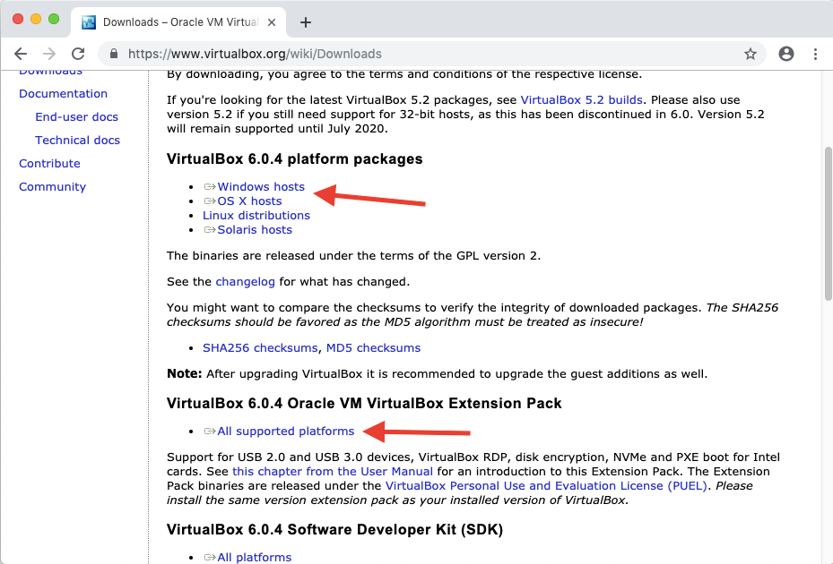The 6.0.4 is just a version number indicating the most recent stable release, and will likely change in the future.
On the editor's Linux Mint computer, VirtualBox 6.0 didn't work so he used VirtualBox 5.2, which you can find on the older versions download page. He also installed the Extension Pack for Version 5.2, which you can find on the same page.
He also had to follow the instructions on this short tutorial on signing VirtualBox Kernel Modules since he was using UEFI secure boot and Linux hates programs messing around with important files unless the user gives the programs explicit permission. A few notes about the tutorial:
user@computer:~/dev$ name="$(getent passwd $(whoami) | awk -F: '{print $5}')" user@computer:~/dev$ out_dir='/root/module-signing' user@computer:~/dev$ sudo mkdir ${out_dir} user@computer:~/dev$ sudo openssl req -new -x509 -newkey rsa:2048 -keyout ${out_dir}/MOK.priv -outform DER -out ${out_dir}/MOK.der -days 36500 -subj "/CN=${name}/" user@computer:~/dev$ sudo chmod 600 ${out_dir}/MOK*
Make sure to choose the platform package specific to your system.
After that point, just open the file you downloaded and follow the instructions to install VirtualBox on your system. You should see a message that says you've installed VirtualBox successfully after you're done.
Next, you'll want to start VirtualBox up. From there, go to File > Preferences > Extensions. Click on the down arrow on the blue square to open up a file explorer. Then, navigate to the Extension Pack you downloaded, and open it. You'll then see a dialog box pop up asking if you want to install the Extension Pack, so click Install.
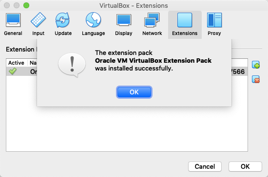First, we're going to create the virtual machine, so we'll click the button that says "New". From there, we're going to give it a name so we can identify it later. We're going to install Xubuntu, which is the Ubuntu Distribution with the XCFE window manager instead of the GNOME window manager that comes with Ubuntu by default, since it's efficient and high quality.
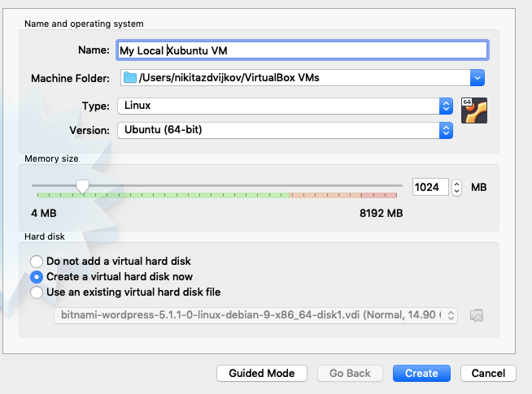As you can see, we gave it the name "My Local Xubuntu VM" (name it whatever you want), we left the machine folder untouched, we set the "Type" field to Linux and the "Version" field to "Ubuntu (64-bit)".
Now, we're going to have to set some parameters of our virtual machine. Since the virtual machine is like its own computer so it needs RAM to function properly. Our virtual machine will end up taking some RAM from our main computer, but we still want most of our RAM reserved for our main computer, so we're going to limit the amout of RAM the virtual machine can use. Since Xubuntu doesn't need a lot of resources, around 1024 MB to 2048 MB of RAM is fine. Just make sure that you don't open too many tabs of Google Chrome on the virtual machine or anything else that hogs a bunch of RAM.
To be clear, your virtual machine has 1024 MB to 2048 MB of RAM, meaning your virtual machine will be simulating a computer with 1 GB to 2 GB of RAM. Furthermore, your main computer will then lose however much RAM you give to the virtual machine while you're running it. If you have 8 GB and you give 2 GB to your virtual machine, you will have 6 GB left for your main computer.
Virtual Machines also need memory on the hard drive, so we're going to reserve some memory for it on our hard drive. We don't have a virtual hard drive yet, so we're going to have to create a new one, so click the option to Create a virtual hard disk now. After hitting Create, another window will pop up to allow us to create a virtual hard disk.
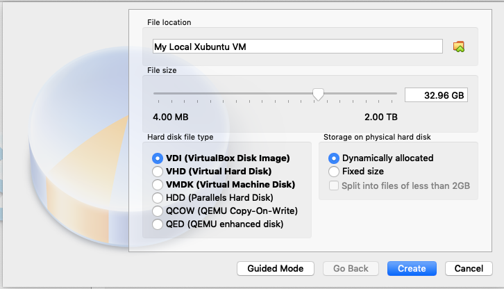We're going to select the VDI (VirtualBox Disk Image) option and the Dynamically Allocated option, which will let the virtual hard drive of the virtual machine grow until it reaches a cutoff point, meaning it will start out taking up almost no space on the hard drive, but as we save files in the virtual machine, it will grow larger. As you can see, we set the cutoff point to 32.96 GB, so the virtual machine will never take up more than 32.96 GB of our hard drive.
Hit Create and we're done. You should see the virtual machine we created in the start up menu.
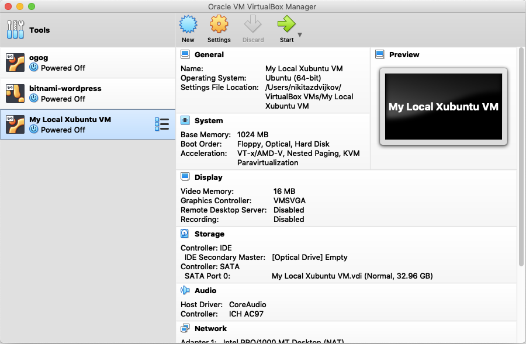Installing most Linux distros requires you to download an .iso file, which
contains all the installation information.
We're going to download the .iso file from a mirror, which is a copy of
a web resource (like a video, website, or .iso file) hosted on a different
server.
Since Xubuntu is being downloaded by people all over the world, we need multiple
servers in a bunch of places to efficently send information about installation
and updates.
Since we're writing this article in the United States, we're going to download
from the United States mirror.
Anyway, we're going to follow the instructions on how to download
Xubuntu.
If you want a different Linux distro, feel free to download any distro you want.
You can either choose to download the .iso file from a mirror or use a torrent
download.
Mirrors are easier to use but torrents are much faster, so the choice is up to
you.
Regardless of what you choose, we're going to want to download the xubuntu-[version]-desktop-amd64.iso
file if we're using a mirror or we're going to want to download the
xubuntu-[version]-desktop-amd64.iso.torrent file if we want to use a torrent, where the current
[version] as of this article was 18.04, so we downloaded
xubuntu-18.04-desktop-amd64.iso.
-amd64.iso file is for 64 bit computers and the -i386.iso is for 32 bit
computers.
Unless you're running an old computer, you have a 64 bit computer.
If you downloaded the .iso file from the mirror, then we can move on.
If you downloaded the .iso.torrent file, then you'll need to torrent download
the .iso file, then we can move on.
Once again, only use the .iso.torrent file if you know how to torrent
download.
.iso File to the Virtual MachineNormally, when you install an operating system, you store the operating system in some removable media (like a USB or a CD) and then you boot (start up your computer) using the removable media. We don't have a physical USB port or an optical drive (a CD tray) on our virtual machine, so VirtualBox has to provide some way for us to emulate them. We can access our emulated optical drive by clicking on our VM (My Local Xubuntu VM), clicking on the Settings button (should be in the same row as the New button we clicked earlier), clicking on Storage, then clicking on Empty under Controller:IDE in the Storage Devices box, clicking on the CD icon, then clicking on Choose Virtual Optical Disk File.
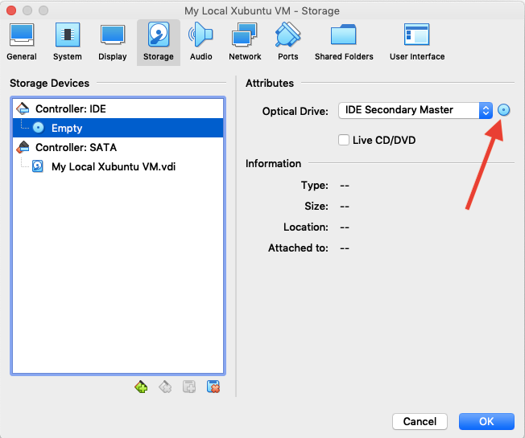From there, we just have to find the .iso file we downloaded (which should be
in Downloads unless you did something weird), click it and then click
open.
Afterwards, we should see exactly what we saw earlier after navigating to
Storage in VirtualBox's settings but with Empty replaced with xubuntu-18.04-desktop-amd64.iso.
From here, hit OK and we should be good to go to set up Xubuntu.
After hitting OK, you should be back at the start up screen and you should see My Local Xubuntu VM on the left.
Hit Start, and you should see a screen like this:
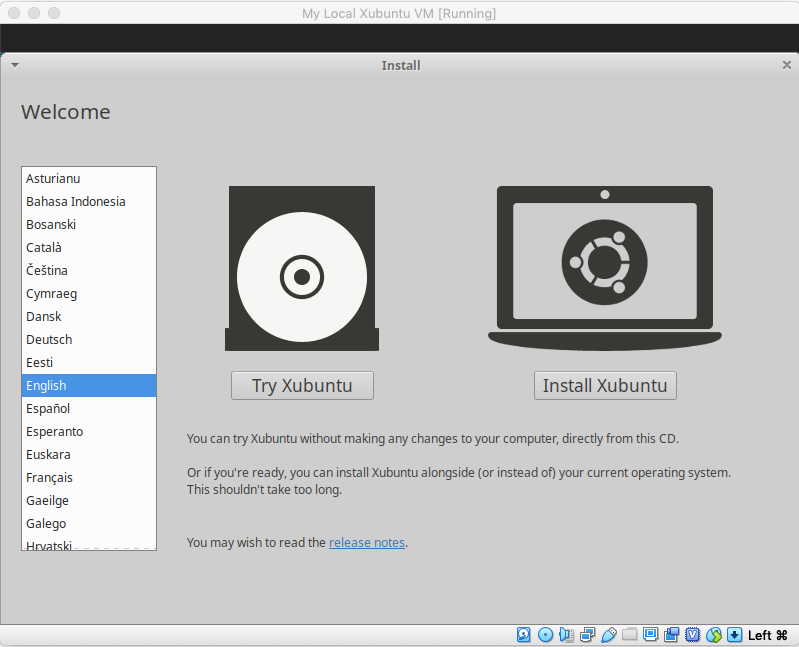Pick your installation language on the left and then click the Install Xubuntu button. From there, pick your keyboard layout.
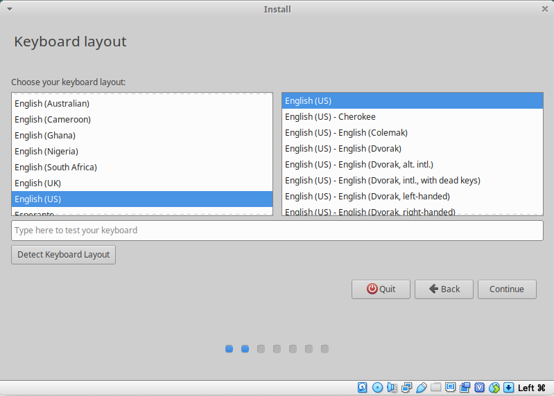Then, check both boxes to Download updates while installing Xubuntu and to Install third party software for graphics and Wi-Fi hardware and additional media formats on the next screen.
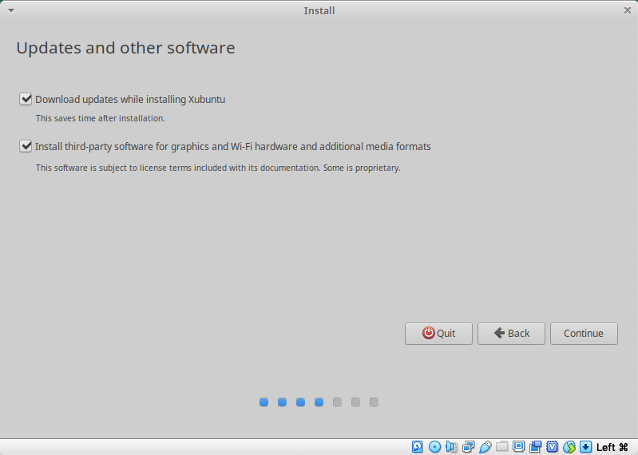Then, don't bother with anything (including encryption and LVM) except the Erase Disk and Install Xubuntu option.
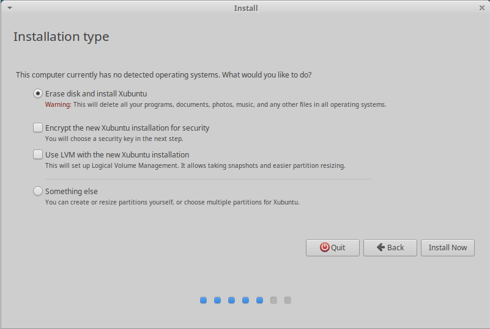A popup will appear asking if you're sure that you want to erase the disk, which you do since it's empty anyways.
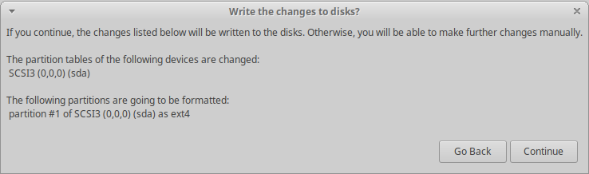After that, you'll select your time zone. Then, you'll select your username, computer name (how other computers will see your computer), and your password. We decided to have our username as "johndoe" and our computer name as "johndoe-comp". You'll also want to require your password to log in for security reasons.
From there, hit Continue and wait until the installation finishes.
You should see a window pop up telling you installation is complete and that
you'll have to restart your computer.
Hit Restart Now.
If you see something saying Remove Installation Disk, then Reboot, you
need to "eject" the installation disk, which I did by shutting down the virtual
machine (closing the window), then going into the settings where we added the
.iso file into storage, clicking on the CD icon and clicking the
option to remove the disk.
If you do it correctly, you should see that xubuntu-18.04-desktop-amd64.iso has been replaced with
Empty.
From there, go back to the start menu and restart your virtual machine. Once you do, let it load up and it will eventually get to a log in screen, which takes the password you created in this step. We have successfully made a working virtual machine!
If you see an prompt to update software, ignore it. We're going to use the terminal to update our software since it's more powerful. Go into apps (it's a button with the Xubuntu logo into the top left corner of the screen that works just like hitting the Windows icon in the bottom left corner of the screen) and select Terminal or Terminal Emulator.
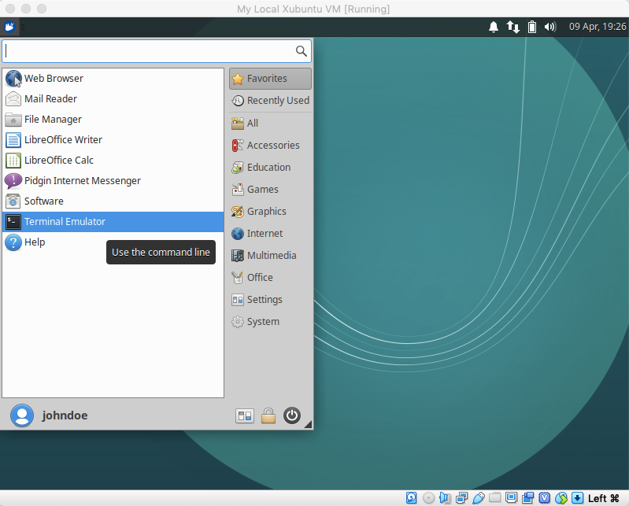Doing so will open a terminal that looks like
To run a command as administrator (user "root"), use "sudo <command>".
See "man sudo_root" for details.
johndoe@johndoe-comp:~$ ▮
The first two lines will only be displayed the first time you open a terminal.
After this point, we're just going to display the black box in the terminal window.
At this point, I would recommend opening this webpage in your VM on Firefox (you can install Chrome later) so that you can copy the commands into the terminal from within the VM. Later in the article, we're going to show you how to make a shared clipboard that will allow you to copy and paste between the host computer and the VM.
First, we're going to want to update all the programs on our computer, so we'll
use the commands sudo apt update to figure out everything that needs to be
updated and sudo apt upgrade to update everything.
The sudo command is equivalent to Run As Administrator on Windows and apt
is a package manager, which manages what software you're running on your
computer.
Whenever you run a command with sudo at the front, you're going to get a line
that says [sudo] password for johndoe:, at which point you need to type your
user password for the account.
If you run two commands with sudo in a short time, you probably won't have to
type it in the second time.
johndoe@johndoe-comp:~$ sudo apt update
[sudo] password for johndoe:
Hit:1 http://us.archive.ubuntu.com/ubuntu bionic InRelease
Get:2 http://us.archive.ubuntu.com/ubuntu bionic-updates InRelease [88.7 kB]
Get:3 http://security.ubuntu.com/ubuntu bionic-security InRelease [88.7 kB]
Get:4 http://us.archive.ubuntu.com/ubuntu bionic-backports InRelease [74.6 kB]
Get:5 http://us.archive.ubuntu.com/ubuntu bionic-updates/main amd64 DEP-11 Metadata [285 kB]
Get:6 http://security.ubuntu.com/ubuntu bionic-security/main amd64 DEP-11 Metadata [26.4 kB]
Get:7 http://us.archive.ubuntu.com/ubuntu bionic-updates/main DEP-11 48x48 Icons [70.9 kB]
Get:8 http://security.ubuntu.com/ubuntu bionic-security/main DEP-11 48x48 Icons [14.6 kB]
Get:9 http://us.archive.ubuntu.com/ubuntu bionic-updates/main DEP-11 64x64 Icons [140 kB]
Get:10 http://security.ubuntu.com/ubuntu bionic-security/main DEP-11 64x64 Icons [37.8 kB]
Get:11 http://us.archive.ubuntu.com/ubuntu bionic-updates/universe amd64 Packages [1,006 kB]
Get:12 http://security.ubuntu.com/ubuntu bionic-security/universe amd64 DEP-11 Metadata [42.1 kB]
Get:13 http://us.archive.ubuntu.com/ubuntu bionic-updates/universe i386 Packages [979 kB]
Get:14 http://security.ubuntu.com/ubuntu bionic-security/universe DEP-11 48x48 Icons [16.4 kB]
Get:15 http://security.ubuntu.com/ubuntu bionic-security/universe DEP-11 64x64 Icons [116 kB]
Get:16 http://us.archive.ubuntu.com/ubuntu bionic-updates/universe amd64 DEP-11 Metadata [253 kB]
Get:17 http://us.archive.ubuntu.com/ubuntu bionic-updates/universe DEP-11 48x48 Icons [205 kB]
Get:18 http://security.ubuntu.com/ubuntu bionic-security/multiverse amd64 DEP-11 Metadata [2,464 B]
Get:19 http://us.archive.ubuntu.com/ubuntu bionic-updates/universe DEP-11 64x64 Icons [462 kB]
Get:20 http://us.archive.ubuntu.com/ubuntu bionic-updates/multiverse amd64 DEP-11 Metadata [2,468 B]
Get:21 http://us.archive.ubuntu.com/ubuntu bionic-backports/universe amd64 DEP-11 Metadata [7,924 B]
Fetched 3,920 kB in 5s (808 kB/s)
Reading package lists...
Building dependency tree...
Reading state information...
307 packages can be upgraded. Run 'apt list --upgradable' to see them.
In general, the output of sudo apt update is a Hit:, a bunch of Get:s, a
Fetched X kB in Ys (Z kb/s), and then everything else in the previous
terminal.
Upgrading 307 packages will take a while, so you might want to get something
else to do for a little bit while you're upgrading them.
You could also skip the upgrades for now, but I wouldn't recommend it.
Type sudo apt upgrade into the terminal and hit Enter, and the computer will
update all the packages it found during sudo apt update.
I can't show the output here since it's just a wall of text, but I will show
some of the results of sudo apt install gcc make perl later, which looks
similar to the output of sudo apt upgrade.
When you see the line
Do you want to continue [Y/n]?
hit y then Enter.
We're going to need to install Guest Additions in order to use shared folders. We can install them by clicking on the Devices tab at the top of the VM, then clicking the option Insert Guest Additions CD image....
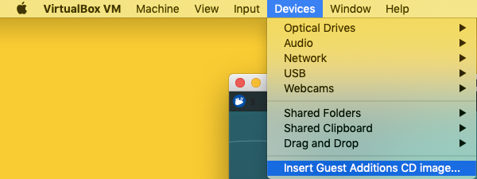From there, type cd /media/[username]/VBox_GAs_[version_number] into the
terminal and hit Enter to change the current directory.
In our case, our [username] is johndoe and our [version_number] is
6.0.4, so we typed cd /media/johndoe/VBox_GAs_6.0.4.
When the editor installed VirtualBox on his laptop, he installed version
5.2.32, so he typed cd /media/johndoe/VBox_GAs_5.2.32.
the files in the directory and make sure that you see the files below.
Tab AutocompleteTab key while
typing it in and it will autocomplete for you if possible or display every way
it could autocomplete what you've typed in.
For example,
johndoe@johndoe-comp:~$ cd ~ johndoe@johndoe-comp:~$ ls Do Documents/ Downloads/ johndoe@johndoe-comp:~$ ls Downloads johndoe@johndoe-comp:~$
After moving to ~, your home directory (it's directly analogous to
C:\Users\[username] on a Windows computer), we start typing ls Do (let's say
we want to see everything in our Downloads folder), then we hit Tab to
autocomplete.
Since both Documents and Downloads start with Do, the terminal doesn't
know which one you want, so it prints out both Documents/ and Downloads/.
Then if we type ls Dow and then hit Tab, it will autocomplete to ls
Downloads.
We can then hit enter and see that we don't have any files in Downloads, so
ls Downloads won't print anything out.
In our case, we can type in cd /media/ and hit Tab a few times and it will
be the correct directory.
Type ls to print out all the files in the current directory and make sure you
have files and folders that look like these:
johndoe@johndoe-comp:~$ cd /media/johndoe/VBox_GAs_6.0.4 johndoe@johndoe-comp:/media/johndoe/VBox_GAs_6.0.4$ ls 32Bit 64Bit AUTORUN.INF autorun.sh cert OS2 runasroot.sh TRANS.TBL VBoxLinuxAdditions.run VBoxSolarisAdditions.pkg VBoxWindowsAdditions-amd64.exe VBoxWindowsAdditions.exe VBoxWindowsAdditions-x86.exe
Then, we're going to execute the VBoxLinuxAdditions.run file using the syntax
./VBoxLinuxAdditions.run.
Since we're messing around with system files, we need to use sudo to tell the
computer that we are allowing VBoxLinuxAdditions.run to mess with these files.
johndoe@johndoe-comp:/media/johndoe/VBox_GAs_6.0.4$ sudo ./VBoxLinuxAdditions.run
[sudo] password for johndoe:
Verifying archive integrity... All good.
Uncompressing VirtualBox 5.2.32 Guest Additions for Linux........
VirtualBox Guest Additions installer
Copying additional installer modules ...
Installing additional modules ...
VirtualBox Guest Additions: Building the VirtualBox Guest Additions kernel
modules. This may take a while.
VirtualBox Guest Additions: To build modules for other installed kernels, run
VirtualBox Guest Additions: /sbin/rcvboxadd quicksetup <version>
VirtualBox Guest Additions: Building the modules for kernel 4.15.0-20-generic.
This system is currently not set up to build kernel modules.
Please install the gcc make perl packages from your distribution.
VirtualBox Guest Additions: Running kernel modules will not be replaced until
the system is restarted
VirtualBox Guest Additions: Starting.
VirtualBox Guest Additions: Building the modules for kernel 4.15.0-20-generic.
This system is currently not set up to build kernel modules.
Please install the gcc make perl packages from your distribution.
We got an error, which we can fix by installing the packages gcc, make, and
perl, which we can do by using sudo apt install gcc make perl.
The last two lines of the terminal above make it explicit that we need to
install these packages.
johndoe@johndoe-comp:/media/johndoe/VBox_GAs_6.0.4$ sudo apt install gcc make perl
Reading package lists... Done
Building dependency tree
Reading state information... Done
Reading package lists... Done
Building dependency tree
Reading state information... Done
perl is already the newest version (5.26.1-6ubuntu0.3).
The following additional packages will be installed:
gcc-7 libasan4 libatomic1 libc-dev-bin libc6-dev libcilkrts5 libgcc-7-dev
libitm1 liblsan0 libmpx2 libquadmath0 libtsan0 libubsan0 linux-libc-dev
manpages-dev
Suggested packages:
gcc-multilib autoconf automake libtool flex bison gcc-doc gcc-7-multilib
gcc-7-doc gcc-7-locales libgcc1-dbg libgomp1-dbg libitm1-dbg libatomic1-dbg
libasan4-dbg liblsan0-dbg libtsan0-dbg libubsan0-dbg libcilkrts5-dbg
libmpx2-dbg libquadmath0-dbg glibc-doc make-doc
The following NEW packages will be installed:
gcc gcc-7 libasan4 libatomic1 libc-dev-bin libc6-dev libcilkrts5
libgcc-7-dev libitm1 liblsan0 libmpx2 libquadmath0 libtsan0 libubsan0
linux-libc-dev make manpages-dev
0 upgraded, 17 newly installed, 0 to remove and 307 not upgraded.
Need to get 17.1 MB of archives.
After this operation, 73.9 MB of additional disk space will be used.
Do you want to continue? [Y/n]
After typing y and hitting Enter to continue, you should see a bunch of
Get:s followed by a Fetched X MB in Ys (Z kB/s), then a bunch of Selecting
previously ..., Preparing to unpack ..., and unpacking ... lines, then a
few Setting up ... and Processing triggers for ... lines, and then you're
done.
Now, we should be able to run sudo ./VBoxLinuxAdditions.run without any
problems.
johndoe@johndoe-comp:/media/johndoe/VBox_GAs_6.0.4$ sudo ./VBoxLinuxAdditions.run [sudo] password for johndoe: Verifying archive integrity... All good. Uncompressing VirtualBox 5.2.32 Guest Additions for Linux........ VirtualBox Guest Additions installer Removing installed version 5.2.32 of VirtualBox Guest Additions... update-initramfs: Generating /boot/initrd.img-4.15.0-20-generic Copying additional installer modules ... Installing additional modules ... VirtualBox Guest Additions: Building the VirtualBox Guest Additions kernel modules. This may take a while. VirtualBox Guest Additions: To build modules for other installed kernels, run VirtualBox Guest Additions: /sbin/rcvboxadd quicksetupVirtualBox Guest Additions: Building the modules for kernel 4.15.0-20-generic. update-initramfs: Generating /boot/initrd.img-4.15.0-20-generic VirtualBox Guest Additions: Running kernel modules will not be replaced until the system is restarted VirtualBox Guest Additions: Starting.
Notice that we're still in the directory /media/johndoe/VBox_GAs_6.0.4 when we
run the command sudo ./VBoxLinuxAdditions.run.
If we were instead in the directory ~ (remember that it's our home directory),
the command would look for VBoxLinuxAdditions.run in our home directory
instead of in /media/johndoe/VBox_GAs_6.0.4, which doesn't exist.
Now that we've set up our virtual machine, we need to create some way for us to
share files between them, so let's create a shared folder.
First, we're going to need to go to our host machine (your original operating
system) and create a folder.
It doesn't matter where we create it or what we named it, so long as we know
where we created it and what we named it.
We decided to create a folder called vm-shared in the directory
/Users/nikitazdvijkov/Documents/.
Now, we need to go back to our VirtualBox settings for My Local Xubuntu VM.
Click on My Local Xubuntu VM, then click on Settings, then Shared Folders, then click the Folder with a Plus button, then type the path and the folder name into the box that says Folder Path:. You can also use the arrow on the right of that box to browse through the file manager on your system and select the folder. Then, select the options to Auto-mount and Make Permanent, then hit OK.
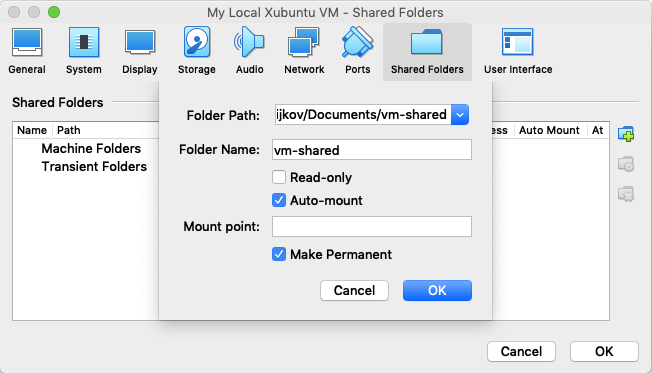You should then see the folder in the list of shared folders with Access
set to Full and Auto Mount set to Yes.
Also, note the name that shows up in Name column, which we will use later
as [name].
As a test, let's create a text file in the shared folder on our host system and see if we can access it from the virtual machine. You can use any code editor (e.g. Sublime), Notepad, etc. you want, just save it as some sort of text file.
Now, we should be able to access the shared folder in /media/sf_[name], so
let's try cd /media/sf_[name].
johndoe@johndoe-comp:/media/johndoe/VBox_GAs_6.0.4$ cd /media/sf_vm-shared
bash: cd: sf_vm-shared: Permission denied
We need to tell the computer that johndoe has permission to access the folder,
so we'll need to add johndoe to the list of users that have access to the
folder, which we can do using sudo adduser johndoe vboxsf.
johndoe@johndoe-comp:/media/johndoe/VBox_GAs_6.0.4$ sudo adduser johndoe vboxsf
Adding user `johndoe' to group `vboxsf' ...
Adding user johndoe to group vboxsf
Done.
After adding johndoe to vboxsf, we have to log out and log back in again to
see a change, so log out by clicking the Xubuntu icon at the top left of
the screen that you used to open the terminal, then click the Power
Button on the screen, then click the Log Out Button.
Wait a few seconds, and you should end up back at the log in screen.
Type in your password.
Once you've logged in, open up another terminal and try cd /media/sf_vm-shared
again and it should work.
If you type ls afterwards, then you should be able to see the text file you
created in the shared folder on your host machine.
johndoe@johndoe-comp:~$ cd /media/sf_vm-shared johndoe@johndoe-comp:/media/sf_vm-shared$ ls test.txt
Note that it doesn't matter what directory you're in when you type cd
/media/sf_vm-shared.
Now, if you want to edit or run a file on both your VM and your host computer,
move the file into /media/sf_vm-shared.
A shared clipboard means you can use Ctrl+C to copy text on your host computer and Ctrl+V to paste it on your VM, and vice versa. For example, you've probably noticed that you can't copy and paste the commands from the article on the host machine into the terminal. It's quite easy to fix. In your VM, click Devices at the top of the window, then to Shared Clipboard, then click Bidirectional and you should be done.
From here, click on My Local Xubuntu VM, then Settings, then General, then click on the Advanced tab, then click on the box next to Shared Clipboard: and select Bidirectional from the drop down menu. You might need to log out on the VM or turn the VM off and back on again, but it will work after a bit. You can also change the settings in the VirtualBox startup menu.
Either method worked on the editor's Linux host computer, but the second method is more likely to work on the author's Mac host computer.
In the terminal, "Ctrl+C" is reserved for stopping a program running in the terminal and "Ctrl+V" is reserved for "verbatim input", meaning that it will write out the literal character that comes after it, such as the "Esc" key.
Regardless, "Ctrl+C" and "Ctrl+V" are reserved for other things, so you have to use "Ctrl+Shift+C" and "Ctrl+Shift+V" to copy and paste things from the terminal.